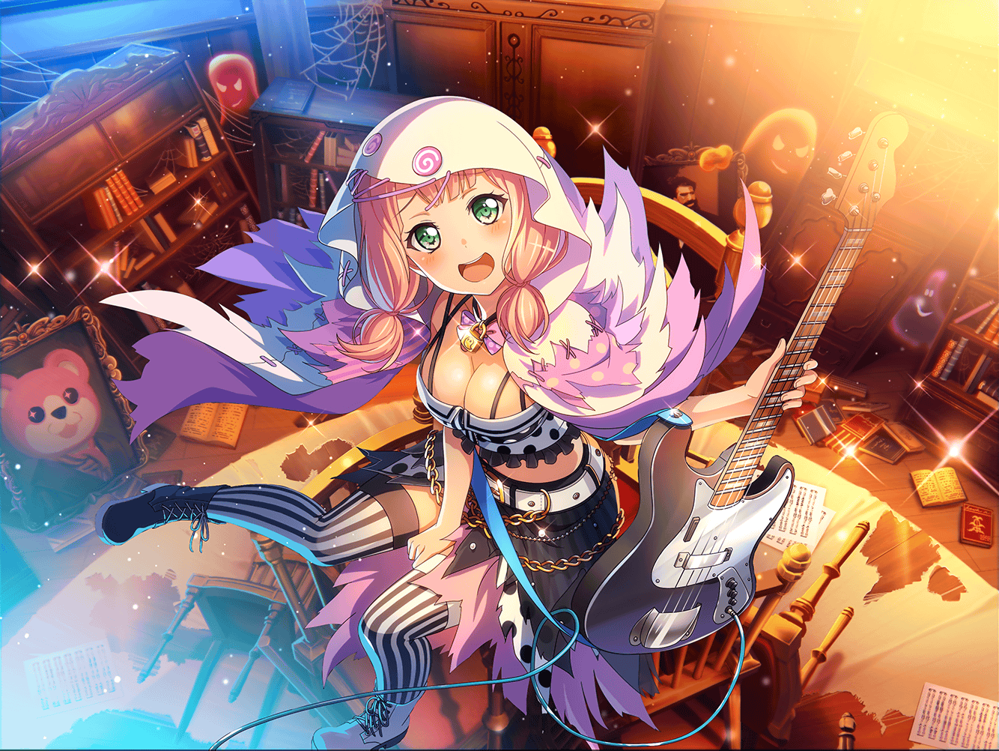

商店街
ひまり
るんる〜ん♪ 何を買おうかな〜♪
ひまり
あ、{{userName}}さんっ！
おーい、ここ、ここ〜！
ひまり
こんにちはっ。今日もお疲れ様でーす♪
ひまり
浮かれてるけどどうしたかって？
浮かれてるのわかっちゃいます？
ひまり
実は今日、夏休みの宿題を無事に
ぜーーーんぶ提出し終わったんですっ！
ひまり
えへへ、ありがとうございますっ！
ひまり
で、無事に提出し終わった自分へのご褒美に、
今日はやまぶきベーカリーでパンを買って帰ろうと思って
ひまり
いやあ〜……今年の夏は人一倍濃かったからなあ〜。
開放感でいっぱいですよ〜
ひまり
あはは、実はですね……
夏休みに、教室に参考書を忘れてきちゃって
ひまり
Afterglowのみんなに
付き合ってもらって取りに行ったんです
ひまり
……夜の学校に！
ひまり
無事に参考書をゲットして、外に出ようと思ったら、
外に出る扉が全部鍵閉められちゃってて！
夜の学校に閉じ込められちゃったんですよ〜！
ひまり
今思い出すだけで怖いですよ……
閉じ込められた時はもうダメかと思ったなあ
ひまり
モカだけは『おもしろくなってきた〜』とか言ってましたけど。
ほんとにモカは怖いもの知らずですよね
ひまり
{{userName}}さんは夜の学校って
入ったことありますか？
ひまり
夜の学校って、暗いだけじゃないんですよ……
ひまり
起こるんですよ、不思議なことが！
ホントですって！ 私達、実際に体験したんですっ
ひまり
突然物音がしたり……あとあと、喋ってもないのに
巴の声が聞こえてきたりとか……
ひまり
あ！ {{userName}}さん、あんまり信じてないでしょ？
顔に出てますよ〜？ ホントなんですって〜！
ひまり
けど、私達ですら最初は、起きてる事が
信じられなかったから当然かあ……
ひまり
できればもう二度と体験したくないです……
まあ、元はと言えば全部私が原因なんですけどね
ひまり
そうですよね、無事宿題が終わって、提出できたから
いいですよね！
ひまり
……それにしても、参考書取りに行くのを付き合ってくれたり、
宿題も手伝ってくれたり、私はいい友達を持ったなあ♪
ひまり
{{userName}}さんもそう思います？
えへへっ、ありがとうございます！
ひまり
さーって、おいしいパンをたくさん買うぞーっ！
モカにおすすめのパンはバッチリ……
ひまり
……あ！
ひまり
……参考書取りに戻ったの付き合ってもらったお礼に
みんなにおごるって約束してたんだった……
ひまり
おさいふ状況は……うう……
ひまり
自分へのご褒美は、バイト代が入るまで無理かあ〜……